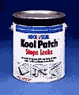
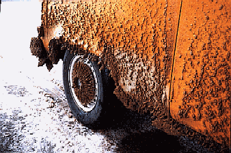
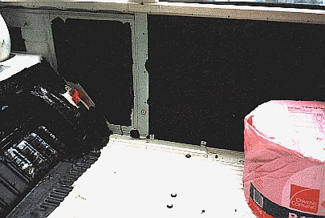
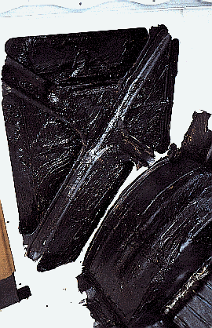
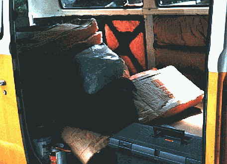
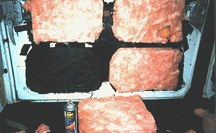
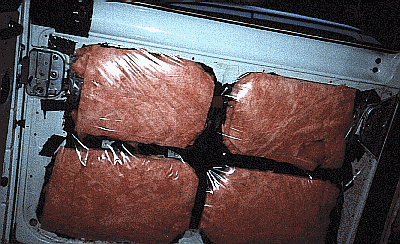

Interior Out, Noise Proofing 2

Next step, Kool Patch!
As we saw in the pictures previously, the body has little protection from the ravages of friction, and moisture. As this van was to serve us for many years, I made valiant efforts toward protecting the body from corrosion, while deadening sound. The product of choice, Kool Patch, by Kool Seal (www.Koolseal.com). (Graphics shamelessly absconded with from Koolseal website)
This product is designed primarily for patching home roofs. It is an asphalt/rubber/fiberglass emulsion that comes in a gallon bucket for about $8.00. It brushes on with a coarse-bristle (Tampico) brush, and is approximately the consistency of chocolate pudding, while neither as flavorful nor as nutritious. It does smell nice though.
Once dried, it requires a blow torch for removal. I'm not kidding. It is a tough, leathery, thick coating that laughs at the most offensive weather, salt spray, or friction. I cannot speak highly enough of this product. If you are going through a total "re-do" like we were, or if you just want to re-undercoat your fenders, USE THIS STUFF. A couple of coats of this will (perhaps permanently???) protect your van. We used copious amounts of this, inside and out in the van.
I seem to recall some assurance (on the can or website) that it will last eight years or more on a roof. It has lasted more than two years under the van without changing, flaking, or anything. I combed some through my hair, and it stopped my retreating hairline. Great stuff.Here's an example of the type of crap we put this van through, and the Kool Seal looks like the day I put it on. Rapid City, South Dakota; that's "popcorn" ice covering the panels and wheel cover. The entire bottom of the bus was coated in 1-5" of ice like this. No problem. None of the Kool Patch flaked or cracked.
Kool Seal recommends it as an undercoating, and I second the motion. We covered the entire underbody and the entire interior (behind the panels, under the insulation).

At the point shown in the photos above, The wheel arches, walls, and inclined area at the back of the floor have been covered with Q-Pads, and then sealed around/over-coated with two layers of Kool Patch. In the photo on the right, the Kool Patch is still moist.
We undercoated the interior primarily to prevent rust. We have all seen how much condensation forms on the windows while driving or camping in the winter; that same condensation can form on the inside walls too. Further, it was possible that moisture could accumulate in the insulation (from a spill, rain leakage, etc) and rust through the body. The Kool patch virtually eliminates this possibility. It furthers the noise-damping in the body, too.
We will discuss undercoating of the floor/undercarriage in greater detail in the heater section/conclusion.

R-13 Insulation
A primary mission in this exercise was to create a warm, comfortable bus for winter outings, the first of which was our 9,000 mile honeymoon across the USA in the winter (Oct-Dec 1997).
It made no sense to leave the outside walls un-insulated. R-13 household insulation is readily available, and is not terribly expensive (in addition, it looks like cotton candy, which reminds me of the Fair). I recall that I bought a roll at a home store, and still had enough change from a $20 for lunch with Mrs.B. at Taco Bell. Mmmmmmmm.
Welcome to Insulation 101
- Insulation works by trapping little pockets of air. Air is the insulator, not the fiberglass.
- Air is a great insulator. That is why you can stand near flowing hot lava and take pictures of it. If air suddenly conducted lava's 1,300-degree heat as well as metal does, it would spoil your photograph, your hairdo, and probably your entire vacation.
- Little pockets of air are just about as good at insulating as BIG pockets of air.
- So, the greater the number of little pockets of air between you and the chilly VW steel, the better you are going to feel. Therefore, fiberglass must be fluffy to work.
- If you PACK the insulation in, it will not work well. Not enough little pockets of air.
- If you leave spaces around the insulation for air to flow, you will have drafts and cold spots.
- So, chassis cavities must be full, but not OVERFILLED.
This is a time-consuming task, fit for monks and retirees. The insulation must be cut precisely to fill, but not overfill each cavity. These cavities are a myriad of shapes and thicknesses, and there was no practical way to save time. I recall this task taking a week of evenings. I must truly love my wife.

The left photo is self-explanatory if you are familiar with the interior of a VW bus. The right photo shows the interior of the sliding door. It has been covered with Q-Pads, doubly coated with Kool Patch, and sprayed with spray adhesive in preparation for the insulation. You will notice small bits of insulation on the floor of the van. Don't throw these away until you are finished with the job, as they come in handy to fill small gaps. The voids in the door were later filled with foam filler.
Cut the insulation to fit, spray, stick.

Vapor Barrier
 If you put insulation behind your upholstered panels
and you fail to put a solid vapor barrier on top of it, you have
insured your van's future as a chicken coop or artificial reef.
Follow me on this�
If you put insulation behind your upholstered panels
and you fail to put a solid vapor barrier on top of it, you have
insured your van's future as a chicken coop or artificial reef.
Follow me on this�
If ever you:
- camp in your van, or just sleep in it (rest stop) on cool nights,
- hop in with damp clothes on and turn on the heat, or
- entertain your mate in the van a way that causes you both to respire heavily,
you put a LOT of water vapor into the air. That vapor can go virtually anywhere in your van and condense. It particularly likes places where the air is motionless and cool, like on the window panes and the outside body panels (behind the upholstered panels, where it can condense in private).
Insulation holds water. Fiberglass insulation can hold many times its weight in water. Here comes your respiration, and it all condenses behind your body panels, in the giant pink sponge, your insulation. There is no mechanism for that insulation to dry out until summer (if then), so for months, your insulation, and therefore, your body panels stay wet.
Within a few years, the inside of the walls will rust, and you won't know it until the paint on the OUTSIDE starts to bubble up. UGH! Avoid it.
Here is our door, completely sealed off with 4.5 mil plastic sheeting. The black pieces you see near the latch are fragments of Q-Pad positioned to catch the resonance of the latch closing. The voids are filled with foam at this point and we are ready for our upholstered panels. You must do this to ALL of you insulated panels.
This is not difficult to do. Purchase the thickest clear plastic sheeting you can buy. Cut a piece that is roughly 10% bigger than the panel, but follows its contours. Make absolutely sure that the periphery of the door (where the plastic will seal) is Immaculately Clean. According to Catholic Catechism, a surface is defined as "Immaculately Clean" only if you could proudly serve a Balogna sandwich to the Virgin Mother off said surface). If you powerwashed/steamcleaned the body (as described earlier) it will be clean enough.
Buy the best spray adhesive you can buy; that "Arts and Crafts" crap made for kids to hold felt together won't cut the mustard. Follow the directions for "Maximum Bond" which usually entails spraying both surfaces, waiting a minute for it to cure, then placing the plastic in place. I mask off the surrounding surfaces on the body so I can spray with reckless abandon.
On the door above, I sprayed the periphery and the center "t". Place the plastic starting from the center of the panel first, and work your way out. Trim off the excess plastic sheeting with a sharp blade or broken piece of onyx.
VERY
IMPORTANT: this is not Saran Wrap, and
you are not storing Lasagna; this plastic MUST be sealed all the
way around, HOWEVER it should NOT be tight as a drum. Take a close
look at the picture. Puckers are okay. You want this
plastic to have some "play" in it. Polyethylene tends to shrink a
bit as it ages. If you make this tight now it will crack as it
retreats, and then it's rusty-old-VW-brand-chicken-coop-city,
baby.

Getting the hang of this�Take me to Interior section #3
I missed something. Take me back to Interior Section #1

Engine Out, Then Back In | Heater Design, Install | Home

Could our business help yours? Find out how, here: http://www.bulley-hewlett.com/
Write us at: mailto:gmbulley@bulley-hewlett.com